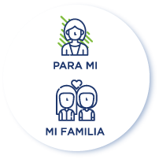
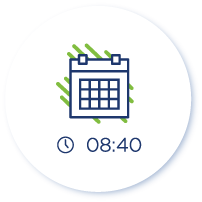

Nuestro Servicio
En Clínica San Felipe hemos implementado el servicio de Consulta Médica Virtual,
un nuevo canal de atención a través del cual el paciente podrá reservar una cita y
atenderse con un médico del staff, ingresando a nuestra App. Esto permitirá que
el paciente pueda recibir atención médica a través de una videollamada, desde
la comodidad de su hogar sin la necesidad de acudir a la clínica de manera
presencial, bajo el mismo estándar de calidad y manteniendo los protocolos de confidencialidad.
Este servicio está dirigido a pacientes adultos y pacientes pediátricos.
Los pacientes menores de edad y aquellos que por su condición de salud requieren
una asistencia especial, deberán estar acompañados por un adulto durante toda la
consulta. Como parte de este servicio, el médico podrá solicitarte exámenes de ayuda
diagnóstica como análisis e imágenes que le permitan realizar una evaluación más
detallada. Además, de considerarlo necesario, el médico podrá emitir una receta
médica simple al finalizar la atención, la cual será enviada a tu correo electrónico.
Beneficios
-
Podrás recibir atención médica desde cualquier lugar en el que te encuentres.
-
Solo necesitas un celular o tablet para acceder a la consulta médica virtual.
-
Reservar una cita es muy simple, solo debes descargar nuestra app y registrarte.
-
Además de la consulta con el médico, tienes la opción de recibir en tu correo electrónico,
recetas y órdenes para exámenes de ayuda diagnóstica.
-
Te ofrecemos el servicio de delivery de medicamentos para que puedas recibirlos en tu domicilio*.
-
Para la entrega de los medicamentos recetados, te ofrecemos el servicio de delivery el cual
se encuentra disponible en Lima Metropolitana y Callao, ello en la medida que tu dirección
esté incluida entre las zonas de reparto. Los distritos que no cuentan con cobertura son:
Ancón, Carabayllo, Chaclacayo, Cieneguilla, Lurigancho de Chosica, Lurín, Pachacamac, Pucusana,
Puente Piedra, Punta Hermosa, Punta Negra, San Bartolo, Santa María del Mar, Santa Rosa,
Villa el Salvador, Villa María del Triunfo y Ventanilla. En caso tu domicilio se encuentre
en uno de estos distritos, podrás adquirir tus medicamentos en la sede de Clínica San Felipe
que te resulte más cercana. Es importante precisar que el delivery será atendido entre las 24
y 48 horas de efectuado el pago por los medicamentos.
Cómo Reservar una Consulta
Paso N°1:
Selecciona si la cita es para ti o algún miembro de tu familia.

Paso N°2:
Elige la opción Consulta Médica Virtual para poder iniciar el proceso de reserva.
Paso N°3:
Escoge una especialidad y luego el médico de tu preferencia.
Paso N°4:
Elige la fecha y hora disponible que más se acomode a tu agenda.

Paso N°5:
Confirma los datos de la cita generada.
Cómo Ingresar a mi Consulta
Recomendaciones
-
Para asegurar la calidad de la Consulta Médica Virtual y una buena experiencia de atención,
te recomendamos estar conectado a una red WiFi o red móvil 4G. La velocidad mínima de
conexión es de 400 Kbps.
-
Asegúrate que tu dispositivo cuente con cámara y micrófono habilitado.
-
Es necesario que estés en un ambiente bien iluminado y sin ruidos o interrupciones que
impidan una buena comunicación con el médico.
-
Antes de conectarte, te sugerimos tener a la mano una librera de notas, en caso necesites
realizar algún apunte. Además tener contigo resultados de exámenes o informes procedentes
de consultas anteriores, de considerarlo necesario para tu consulta.
-
Es importante que puedas ingresar a la videollamada minutos antes de tu cita.